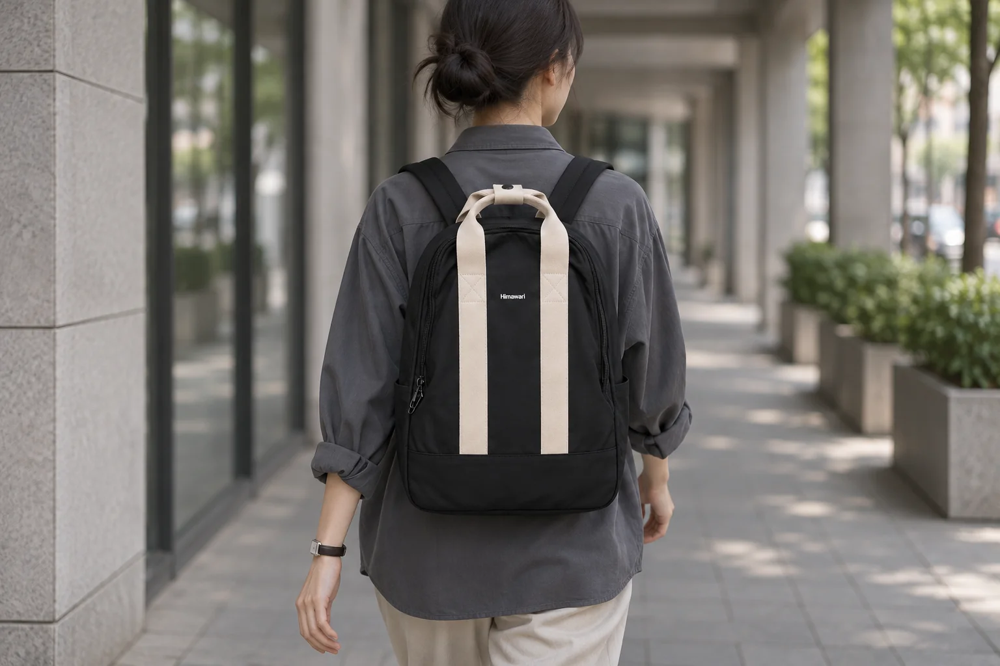
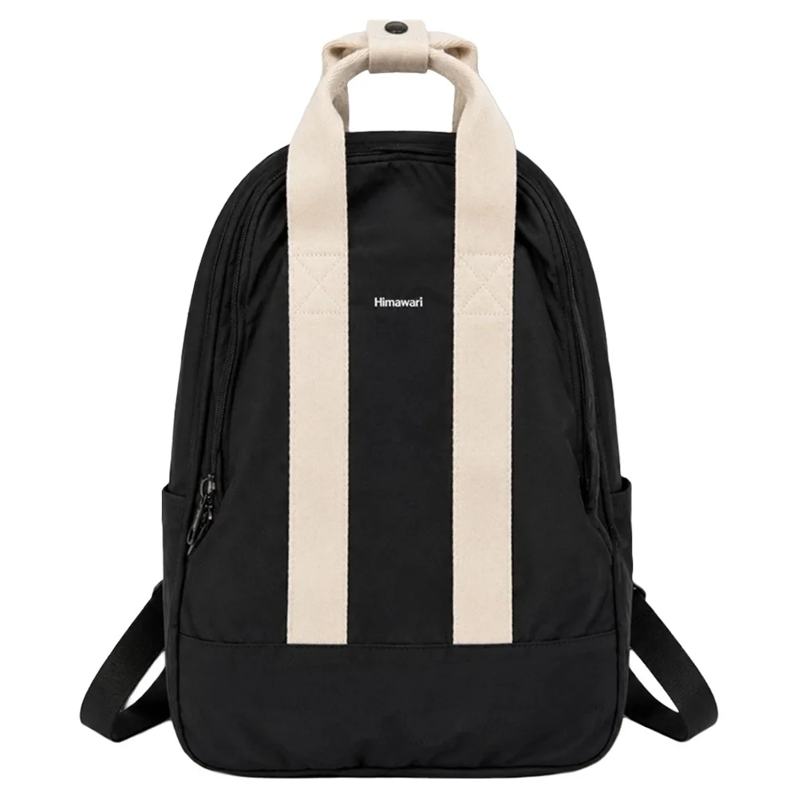
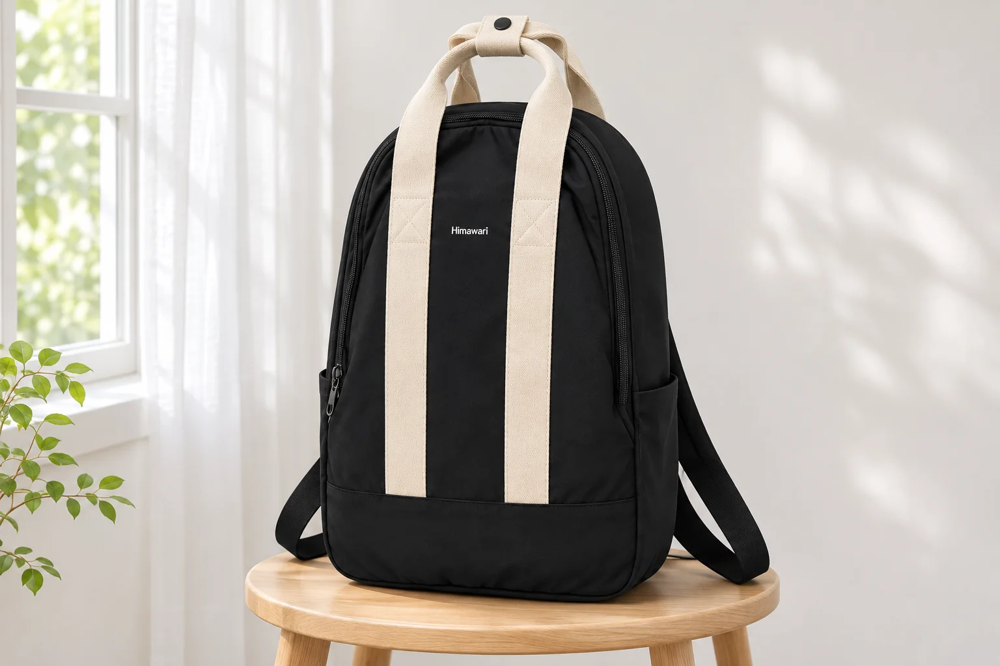

백팩 앞판의 밝은 띠는 어디까지 손가락이 들어갈까

검정 몸체 앞으로 밝은 띠 두 줄이 내려옵니다. 위쪽에는 같은 색 손잡이가 휘어 이어집니다. 아래로 내려온 띠 두 줄은 검은 밑판 바로 위에 멈춥니다. No.2505 블랙의 정면 사진 한 장에는 두 모습이 겹쳐 보입니다. 손이 들어가는 위쪽 공간은 찾기 쉽습니다. 아래로 이어지는 띠 뒤에도 빈 공간이 있는지는 사진을 한 번 더 살펴야 합니다. 몸판에 붙은 띠를 집어 올려 보고 싶을 수 있습니다. 어느 부분이 손잡이인지부터 찾아보세요.
첫 번째 사진에서 위쪽 고리를 찾습니다
정면 사진 위쪽에 검은 몸판과 밝은 손잡이 사이로 배경이 보이는 곳이 있습니다. 두 손잡이를 감싸는 밝은 띠에는 작은 검은 원형 부품이 보이죠. 손가락을 넣어 잡는 곳을 사진에서 찾는다면 그 아래 공간부터 보면 됩니다. 정면에서 보면 손잡이 아래 빈 곳의 윤곽이 잘 보입니다. 실제로 쥐었을 때는 손에 남는 여유도 살펴보세요. 손잡이의 두께와 가방을 들어 올리는 방향에 따라 달라집니다. 원본 사진으로는 손잡이가 몸판 위로 나와 있다는 것까지 확인할 수 있습니다.
어떤 컷에서는 위쪽 손잡이만 밝게 보이고 뒤에 포개진 손잡이는 천에 겹쳐 숨을 수 있습니다. 이때 색만 따라 내려오면 뒤쪽 손잡이까지 앞판 한 줄로 이어진 듯 보입니다. 정면에서 좌우를 한 번씩 살펴보고 조금 옆에서 본 제품 사진과 비교하세요. 띠가 등 쪽으로 돌아가나요, 앞에서 끝나나요? 몸판의 어느 면에 놓였는지 따라가 보세요. 밝은색만 보고 찾을 때보다 띠의 끝을 구분하기 쉽습니다.

두 번째 사진에서 띠가 다시 몸판에 붙는 곳을 봅니다
원본의 앞판 가운데쯤을 보세요. 각 띠에 사각형을 대각선으로 가로지르는 바느질이 한 곳씩 보입니다. 교차하는 실은 밝은 띠 표면을 지납니다. 주변 검정 원단과의 경계만 확대했을 때보다 알아보기 쉬워요. 아래로 더 내려가면 두 띠 끝이 검정 밑판과 만나는 선에 닿습니다. 띠 옆에 좁은 어두운 선이 있다고 해서 손가락이 들어가는 틈이라고 단정하기는 어렵습니다. 띠의 두께에서 생긴 그림자도 정면에서는 짙은 실선으로 보일 수 있거든요.
위쪽 공백과 앞판의 어두운 선을 같은 방식으로 확대해 보세요. 손잡이 아래에는 배경이 드러날 수 있습니다. 앞판 옆의 가는 선이 배경과 이어지는지는 확인하기 어렵습니다. 사선 사진이 있다면 빛을 받는 띠 옆면과 몸판 사이를 봅니다. 들떠 있는 곳이라면 보는 방향을 바꿨을 때 공간의 모양도 달라져 보일 수 있습니다. 몸판과 맞닿아 보이는 부분은 옆선 두께와 색 경계가 더 또렷해질 뿐이에요. 실이 어디로 들어가는지까지 사진으로 정하지는 않습니다. 안쪽에 놓인 부자재도 마찬가지입니다.

확대 사진에서 빠지기 쉬운 두 끝
판매 페이지에서 확대 사진을 찾았나요? 위쪽 손잡이나 밑단이 잘려 있으면 띠 전체의 모양을 보기 어렵습니다. 띠의 두 끝을 한 화면에 두세요. 위에서는 손잡이가 몸판보다 높습니다. 아래에서는 띠가 밑판 경계에 닿습니다. 가까이 찍은 사진에서는 띠 위의 교차 봉제와 끝의 경계가 한 화면에 들어오면 좋습니다. 이때는 실의 위치를 잘 읽을 수 있는 사진이 알맞습니다. 반짝이는 제품 사진보다 그림자가 옅은 컷에서도 실이 잘 보이는지 살펴보세요.
No.2505의 외부 치수 표기는 가로 30cm, 세로 43cm, 폭 14cm입니다. 이 숫자는 몸판의 크기를 가늠할 때 씁니다. 밝은 띠 아래 공간이나 바느질 간격을 알고 싶다면 제품에서 해당 부분을 따로 확인합니다. 화면에서 몸판 높이를 재고 비율로 띠 아래 간격을 계산하고 싶을 수 있습니다. 사진 속에서 몸판 전체와 앞판 일부의 각도가 다를 때가 있습니다. 같은 픽셀이라도 가방에서 같은 길이를 가리킨다고 보기 어렵습니다. 실제 제품을 보게 되면 자를 대는 것보다 움직이는 부분을 눈으로 천천히 따라가는 게 더 빠를 수 있습니다.
상단의 밝은 띠가 검정 몸판과 만나는 자리는 앞판 가운데의 교차 봉제와 구별해 두세요. 한 손으로 가방을 들었을 때 손잡이 바로 아래의 천이 올라와 보일 수 있습니다. 그 아래의 앞판 띠까지 똑같이 움직이는지는 그 장면만으로 알아보기 어렵습니다. 반대로 전체 정면 사진에서 납작해 보이는 손잡이도 촬영할 때 놓인 방향에 따라 배경이 가려질 수 있어요. 사진을 한 장 더 볼 수 있다면 손이 어디에 닿는지 드러난 상단 사진을 고릅니다. 가방을 들고 걷는 큰 사진보다 잡는 위치를 읽기 좋습니다. 천이 얼마나 움직이는지 보고 싶을 때도 양쪽을 담은 짧은 영상이면 충분할 수 있습니다.
이미 이 가방을 쓴다면 짐을 비우고 앞판이 보이는 쪽으로 놓습니다. 손잡이 아래처럼 원래 손이 들어가는 공간은 눈으로 확인합니다. 밝은 띠 아래에는 손가락이나 뾰족한 물건을 억지로 밀어 넣지 마세요. 부품을 잡아당겼을 때의 움직임으로 용도를 추정하면 원래 모양을 바꾸고도 그 차이를 알아보기 어렵습니다. 키링이나 작은 파우치를 달 자리를 찾고 있나요? 사진 속 띠의 길이를 재는 것보다 연결해도 되는 부위를 문의하는 편이 낫습니다.
밝은 줄을 보고 가방을 골랐다면 사진을 저장할 때도 이어지는 띠 전체가 보이도록 남겨 보세요. 나중에 누군가에게 구조를 묻기 위해 한 장을 더 찍을 때는 궁금한 곳을 손으로 가리키면 됩니다. 윗손잡이 아래에 손을 넣는 자리인지, 교차 봉제의 위쪽인지, 밑판 가까이 내려간 띠 끝인지 차이가 드러납니다. 사진에서 보이는 곳을 정확히 짚어 보세요. 같은 세로선을 놓고 사람마다 다른 부분을 설명하는 일을 줄일 수 있습니다.